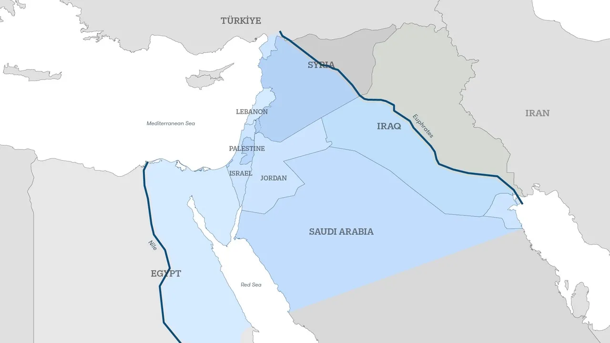

The Jewish people return to the Land of Israel from the diaspora — fulfilling what the prophets declared across millennia. Many regard the founding of modern Israel in 1948 as the opening act of this ingathering. The exiles are coming home. The clock has begun.

Biblical prophecy describes God's covenant granting land "from the river of Egypt to the Euphrates." Some traditions hold that the full establishment of these borders is a prerequisite for the coming of the Messiah — a territorial threshold that has never yet been reached in modern history.
Described in Numbers 19, a perfectly red cow — unblemished, never yoked — must be found. Its ashes, mixed with water, purify those made ritually impure by contact with the dead. This purification is a prerequisite for resuming Temple service. Only nine have existed in all of Jewish history. In 2022–2024, five red heifers were transported from Texas to Israel.
A great coalition of nations descends upon Israel in an apocalyptic assault. The armies of Gog — from the north, from the far reaches — converge on the mountains of Israel. God intervenes directly, destroying the attackers through earthquake, fire, and pestilence, vindicating Israel on the world stage. This is the final war before the age of peace.